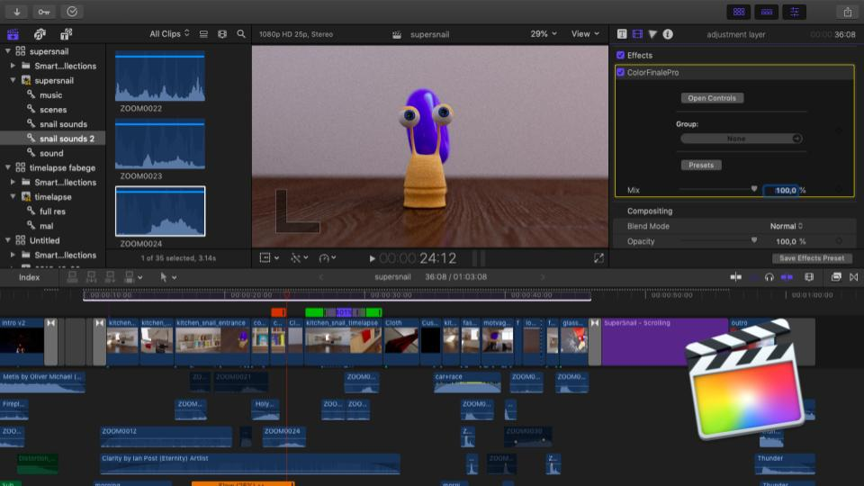

Summary
SuperSnail is a short animated movie about a snail that suddenly gets superpowers and has to deal with the consequences. The movie was created during the course Digital Media at Linköping University and created using the 3D modelling software Blender.
SuperSnail was created as part of a course at Linköping University. The goal of the group was to create an animated movie from scratch and deepen our knowledges in 3D modelling softwares. We chose to use Blender since all group members had easy access to the software.
My responsibilities in the project was partly story and storyboard. I created the snail in Blender, including modelling, texturing, rigging and facial expressions. I animated some scenes. I created the sound effects for the snail.
Technical Walkthrough
Our project group decided together to create a story involving a snail. We started exploring ideas and I sketched up a simple storyboard that we used for our upcoming work.
We split the work of modelling between us in the project group and my main responsability was to design the snail and create a rig for it. I searched for inspirational images and pretty soon I had a body for the snail and eyes but it was hard to settle on a good design for the shell. Eventually I chose a simple spiral and attached it on the top of the snail's back. The textures are all imagebased and added to the body by UV-unwrapping.
I rigged the snail by straight joints through the body and then two parallell joints up through the eyes. In this way we could animate body motion for the snail and also add some emotional expressions with the eyes. I still wanted to being able to animate more emotions than this so I added different facial expressions as shape keys where I changed the direction of the mouth and also added different textures for the eyes so the eyes could be percieved as opening and closing.
We made a "base" kitchen scene that we all used and in this way we could work parallell with each other and render images from Blender as soon as our animations were done. My animations where the shot when the snail is entering in the first place and travels throughout the scene until the towel has fallen over him.
The snail's motions was key framed and the camera is almost stationary when getting the wide shots. The scene with the falling towel is done by key framing both a camera looking up and using a cloth simulation on the towel. In the end the towel also needed some key framing to get it to fall perfectly over the camera to cover it for the purpose of the next scene.
We rendered all images on computers at Linköping University and due to the large number of scenes we had created and the somewhat limited perfomance of the computers we rendered on multiple computers at once.
The post processing work consisted of recording sound effects. I used my own voice for the snail and recorded different background noises to fill up the scenes.
One group member focused on fixing the ending scene with the glass window in After Effects and then we all helped putting together the entire film in Premiere Pro.
We were all pleased with the result of the project. It was our first animated movie and we learned a lot in the process!